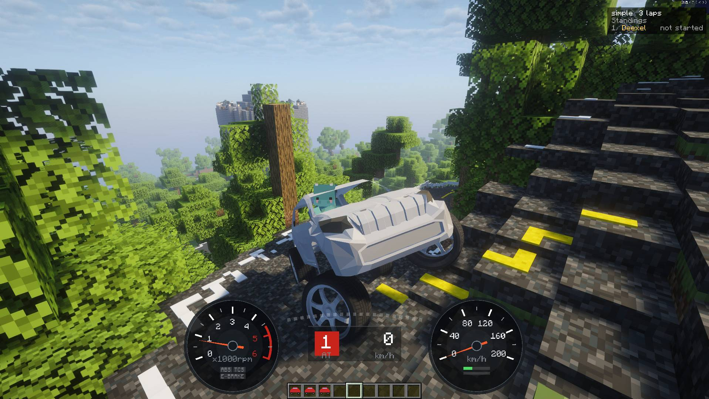

Land Cruiser Prado
Where the road ends, it keeps going.道が終わっても、走りは終わらない。
Where the road ends, it keeps going.道が終わっても、走りは終わらない。
A heavy, tall, proper 4x4. Low-rev torque shoves 2,100 kg forward. It won't keep up with the S15, but it climbs gravel and ledges without a second thought, and nothing else here can do that.重くて背が高い本格 4WD。2,100kg の車体を、低い回転から太いトルクで押し出します。速さでは S15 に敵いませんが、砂利も段差も気にせず登っていく頼もしさは、この 1 台だけのものです。

Every figure below comes from running KurumaMod's own physics: flat tarmac, default setup, full throttle.下の数字はすべて、KurumaMod の物理演算で平坦な舗装路を初期セッティングのまま全開で走らせた結果です。
Like a diesel: thick torque low down, and done by 4,600 rpm. Its 420 N·m at 2,400 rpm beats the S15. The boxy body has 3.5 times the drag, so top speed settles at 143 km/h.ディーゼルのように低回転で太く、4,600rpm で頭打ちになるエンジン。最大トルクは 2,400rpm で S15 を上回る 420N·m。箱形の車体は空気抵抗が S15 の 3.5 倍あり、最高速は 143km/h で釣り合います。
Long suspension and a tall body. The high centre of gravity means more roll and more weight transfer, so the front anti-roll bar is stiffer and it trades eagerness for stability. Steering lock is 32°, less than a road car.ストロークの長い足と、背の高い車体。重心が高いぶんロールも荷重移動も大きく出るので、前のスタビを厚くして、曲がりやすさより安定を取っています。切れ角は乗用車より浅い 32°。

Parts change while you sit in the car. Turbos, tyres and aero change how it drives; mufflers and blow-off valves only change the sound.パーツは車に乗ったまま付け替えられます。走りが変わるのはタービン・タイヤ・エアロで、マフラーとブローオフは音だけが変わります。
Best on sand and snow. This is where the Prado comes alive.砂と雪でいちばん強いタイヤ。この車の本領が出ます。
Grips on dirt and gravel, for when you want to go fast on forest tracks.土と砂利で強いタイヤ。林道を速く走りたいときに。
Boost arrives early, for more pull on hills.低回転から過給が立ち上がり、坂道でも余裕が出ます。
With a turbo fitted, it vents when you lift off.タービン装着時に。アクセルを抜いた瞬間に鳴ります。
| Wheelbaseホイールベース | 3.00 m |
|---|---|
| Trackトレッド | 1.90 m |
| Weight車両重量 | 2,100 kg |
| Weight distribution F : R前後重量配分 | 54 : 46 |
| Drag area (CdA)空気抵抗（CdA） | 2.74 m² |
| Max power最高出力 | 186 PS / 3,630 rpm |
|---|---|
| Max torque最大トルク | 420 N·m / 2,400 rpm |
| Idleアイドル回転数 | 800 rpm |
| Rev limitレブリミット | 4,600 rpm |
| Forced induction過給 | None (turbo available)なし（タービン装着可） |
| Layout駆動方式 | AWD (50 : 50)4WD（前後 50 : 50） |
|---|---|
| Gearbox変速機 | 5-speed, auto or manual5 速 AT／MT 切替 |
| 1st / 5th1 速／5 速 | 4.20 / 0.85 |
| Final drive最終減速比 | 5.03 |
| Differentialデフ | Openオープン |
| Suspension travelサスペンションストローク | 28 cm |
|---|---|
| Anti-roll bars F / Rスタビライザー 前／後 | 5,500 / 2,600 N/m |
| Tyre diameterタイヤ外径 | 92 cm |
| Max steering angle最大切れ角 | 32° |
| Rolling resistance転がり抵抗 | 1.3× the S15S15 の 1.3 倍 |
| 0-100 km/h | 11.00 s |
|---|---|
| 0-400 m | 17.74 s |
| Top speed最高速度 | 143 km/h |
| Power-to-weightパワーウエイトレシオ | 11.3 kg/PS |
Measured with KurumaMod's own physics on flat tarmac, default setup, no parts, full throttle. Max power is calculated from the torque curve. Sizes are in Minecraft blocks (1 block = 1 m), about 1.2× a real car.性能は KurumaMod の物理演算で、平坦な舗装路・初期セッティング・パーツ無し・全開で測った値です。最高出力はトルク曲線から計算しています。寸法は 1 ブロック = 1m で、実車の約 1.2 倍の大きさです。 Change the setup with G and these values change too.G キーのセッティングで変えると、これらの値も変わります。
Install KurumaMod and the Basic Car Pack. Both are free, and the pack is a single jar.KurumaMod と Basic Car Pack を入れるだけ。どちらも無料で、カーパックは jar 1 つです。